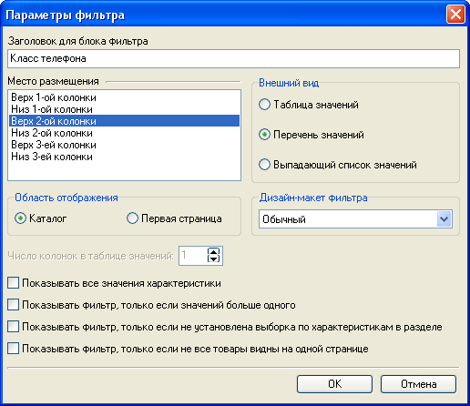
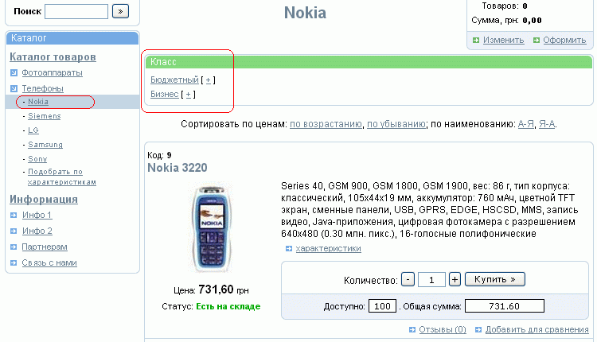
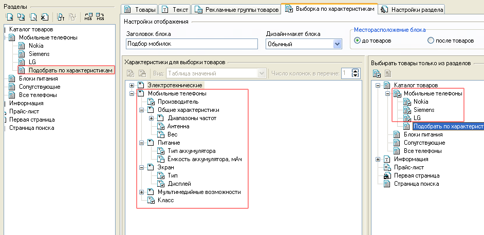
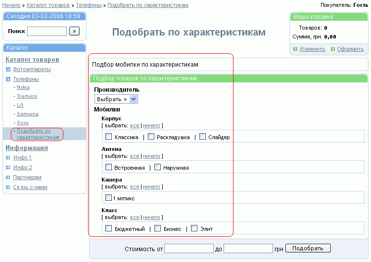

Из всего многообразия товаров магазина покупателю зачастую трудно выбрать требуемый. Локализировать поиск, сузив его до обозримого множества товаров, удовлетворяющих каким-то наперед заданным условиям, позволяют фильтры и выборки по характеристикам (в дальнейшем просто выборки). Именно поэтому очень важно при формировании расширенного описания товара стараться не вбивать туда скопом все его свойства, а использовать систему характеристик. И выборки и фильтры функционируют на основе характеристик.
Обычно фильтры организовываются в разделах, где есть товары и надо их отфильтровать, тогда как выборка организовывается в разделе, в котором нет товаров, но имеются подразделы с товарами, либо в разделе типа "страница с текстом". Как показал опыт использования Melbis Shop, многие пользователи теряются как правильно использовать эти инструменты, поэтому мы приведем пару примеров, когда лучше что использовать. Например, у Вас имеется интернет-магазин видео продукции с большим разветвленным каталогом, а в каждом разделе Вы хотели бы организовать фильтр товаров по характеристике "Издатель". В этом случае, удобно воспользоваться фильтрами, то есть добавить его на основе характеристики "Издатель" и он автоматически появится на всех страницах магазина (в любом разделе каталога). Другой пример, когда у Вас имеется магазин мобильных телефонов, а каталог организован так, что производители являются разделами с товарами. В этом случае, если Вы захотите отфильтровать все телефоны по признаку "имеет блютуз", то сделать это фильтрами не получится, потому как нет единого раздела в котором находятся все телефон всех производителей. Поэтому, для этого можно создать раздел в котором организовать выборку по характеристике "блютуз", а затем указать из каких именно разделов следует брать товары.
Задание фильтров производится в окне, вызываемом из главного окна "Настройки - Фильтры": Возможно задание нескольких фильтров. Их можно создавать, удалять, редактировать:

В настройках указывается область отображения фильтра: "Каталог" или "Первая страница". При указании области отображении фильтра "Первая страница", покупателю будет предлагаться форма, позволяющая выбрать из всех имеющихся в магазине товаров те, для которых выбранная характеристика назначена и ее значение соответствует запрашиваемому. Как правило это используется в магазинах, имеющих однородные товары.
Если задана область отображения фильтра "Каталог", то фильтр будет присутствовать во всех разделах магазина типа "Раздел с товарами" и "Страница с текстом" и, в зависимости от настроек фильтра, позволит огранизовать фильтрацию или только среди товаров текущего раздела, или среди товаров всего магазина. Последнее часто используется, например, на первой странице, страницах каталога, когда задается выпадающее меню с перечнем всех производителей.
На одной странице может быть несколько фильтров по различным критериям. Настройка области отображения фильтра, места его размещения на странице и внешний вид задаются в параметрах фильтра. Дополнительные места размещения и дизайн макеты фильтров могут быть определены в редакторе дизайн-макетов и мест размещения данных. Следует иметь в виду, что при использовании стандартного дизайна и выборе области отображения фильтра "Каталог" не следует указывать место размещения фильтра "Третья колонка", поскольку на страницах этого типа третьей колонки нет и фильтр отображаться не будет.
Если внешний вид фильтра задается в виде таблицы значений, становится активной опция указания числа колонок в этой таблице.
Помимо того, при задании области отображения "Каталог" становятся доступными для выбора опции "Показывать...", задающие условия отображения фильтра в каталоге.
Если же установить параметр "Показывать все значения характеристики", фильтр на всех страницах будет действовать одинакого, выбирая товары не из текущего раздела, а вообще из всех имеющихся в магазине.
Рассмотрим общий пример использования фильтров. Если в магазине имеется раздел "Телефоны" с подразделами "Nokia", "Siemens", "LG", "Samsung" и т.д. и входящим в них товарам назначена характеристика "Класс", то можно организовать фильтр по классу телефона. Тогда покупатель, зайдя в раздел "Nokia" получит возможность выбора из всех товаров этой фирмы телефонов необходимого ему класса.

При этом фильтр по той же характеристике- "Класс" будет действовать и на страницах других разделов: "Nokia", "Siemens", "LG", "Samsung" и т.д. (т.е. в любых других разделах, в которых присутствуют товары, имеющие эту характеристику "Класс").
Альтернативой фильтрам является инструмент выборки товаров по характеристикам. Задание характеристик, по которым будет производится выборка, осуществляется в выбранном разделе типа "Отдел с товарами" и "Страница с текстом" на закладке "Выборка по характеристикам" и позволяет организовать в выбранном разделе функцию подбора товаров по определенным характеристикам, первоначально определяемым в менеджере характеристик.
Выборка по характеристикам привязывается к одному или нескольким разделам и отображается только в заданном разделе. Обычно выборка по характеристикам организовывается в разделе, в котором нет товаров, но могут содержатся подразделы с товарами.
Поиск будет осуществляться среди товаров, обладающих заданными характеристиками и находящихся в указанных при задании выборки разделах.
Для выборки по характеристикам задается "Заголовок блока", "Место расположения блока", а также "Вид" отображения выборки:
Следует учесть, что при задании отображения в виде выпадающего списка значений, в качестве критерия выборки можно будет выбрать только одно значение характеристики, тогда как для таблицы или перечня значений выборку можно осуществлять одновременно по нескольким значениям характеристики.
Для покупателей на страницах магазина будут отображаться только те критерии-характеристики, для которых имеется хотя бы один экземпляр товара с данным значением характеристики.
Для включения/исключения характеристик в/из списка отображаемых служат кнопки (или двойной щелчок на наименовании характеристики):

Рассмотрим теперь пример использования выборки. Можно разместить выборку в разделе "Телефоны", или создать дополнительный раздел и разместить выборку в нем. Поскольку в разделе "Телефоны" подразделов может быть много, то есть риск, что инструмент выборки окажется вне зоны обзора, поэтому в этом случае лучше создать отдельный раздел, например "Подобрать по характеристикам", указав для него, по каким характеристикам можно будет делать выборку, а также в каких разделах выбирать товары.
В итоге покупатель, зайдя в раздел "Подобрать по характеристикам", получит возможность выбора из всех телефонов тех, которые удовлетворяют определенным характеристикам его запроса:
